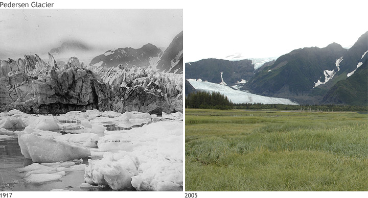
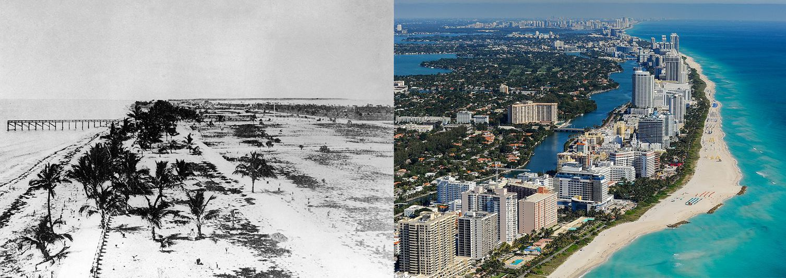
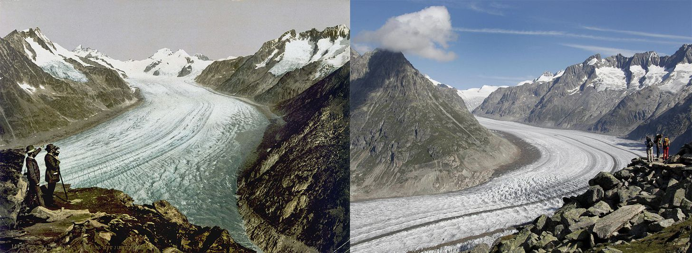
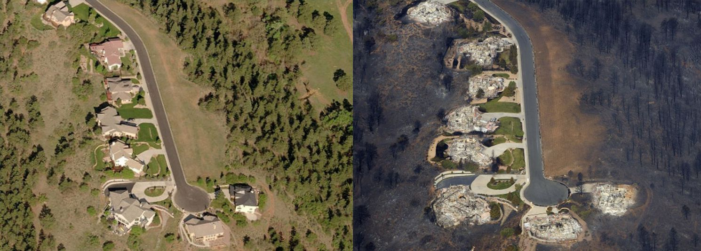
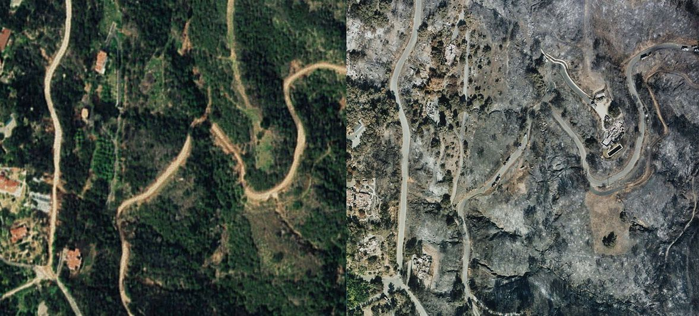
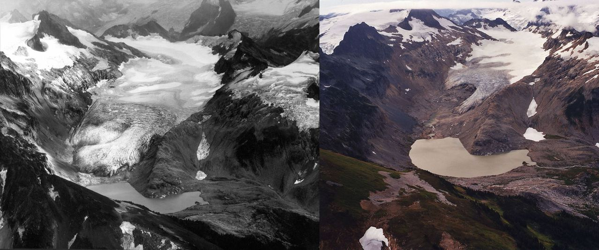

1 / 6

Pedersen Glacier, at Aialik Bay in Alaska’s Kenai Mountains, in 1917 (left) and 2005 (right). In the early 20th century, the glacier met the water and calved icebergs into a marginal lake near the bay. By 2005, the glacier had retreated, leaving behind sediment allowed the lake to be transformed into a small grassland. Photos courtesy of Louis H. Pedersen (1917) and Bruce F. Molina (2005), obtained from the Glacier Photograph Collection, Boulder, Colorado USA: National Snow and Ice Data Center/World Data Center for Glaciology. Large images: 1917 | 2005
2 / 6

South Beach in Miami in the early 1900s and 2014. Since the 1920s, the global average sea level has risen about nine inches and, because Miami sits at sea level, it is very vulnerable to storm-related flooding and sea-level rise.
3 / 6

The Aletsch Glacier, the largest glacier in the Alps, in 1890 and 2003. Like all glaciers on earth, is retreating, at an average rate of 3% per year. Between 1850 and 2005, the Aletsch Glacier's surface area shrank 40%, and the volume shrank by 60%, according to the Swiss Academy of Sciences.
4 / 6

Trevor Lane in Colorado Springs, Colorado, before and after the Waldo Canyon fire ripped through the area in 2012. Climate change means wildfire seasons are longer, conditions are drier and there's an increased frequency of lightning.
5 / 6

Mountain Drive in Santa Barbara, CA, in 1995 (left) and in 2008 (right) show devastation caused by the 2008 Montecito Tea Fire. The first image shows the area several years before the fire, while the second image was taken just days after the fire was contained.
6 / 6

The South Cascades Glacier in 1979 and 2003. Glaciers in the North Cascades of Washington have shrunk by 40% in the last 150 years.
❮
❯